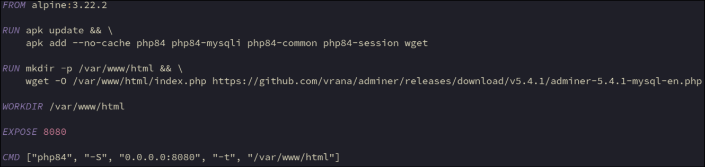

Install the php interpreter and plugins requitred to run adminer
wget to download the adminer php files
Stanadard directory for web files
Download the adminer php file and rename to index.php
Using the smaller english-only & mysql/mariadb-only version
Set the working directory the directory where adminer php files are stored
The standard port used by adminer
No externally exposed ports, connect via nginx reverse-proxy
-S = Start built-in web server on the given local address and port
-t = Specify the document root to be used by the built-in web server
Process will become PID1